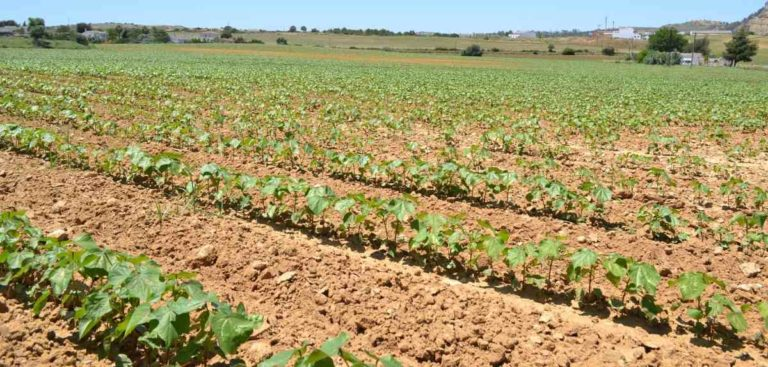

- The crop is generally grown in medium to deep black clayey soil, but is also grown in sandy and sandy loam soil through supplemental irrigation by farmers.
- The major soil types suitable for cotton cultivation are alluvial, clayey, and red sandy loam.
- Cotton is the crop of tropical and sub-tropical areas and requires uniformly high temperature varying between 21°C and 30°C.
Here Is A Procedure for Cotton cultivation
- 

Here is The Details Of Cotton
Here is the cost of cotton crop in the recent years
| Pests Or Diseases | Recommended Product Solutions |
|---|---|
spotted bollworms |
 |
tobacco caterpillars |
|
thrips |
 |
pink bollworms |
|
dinebra
|
 |
for better crop and yield |
 |